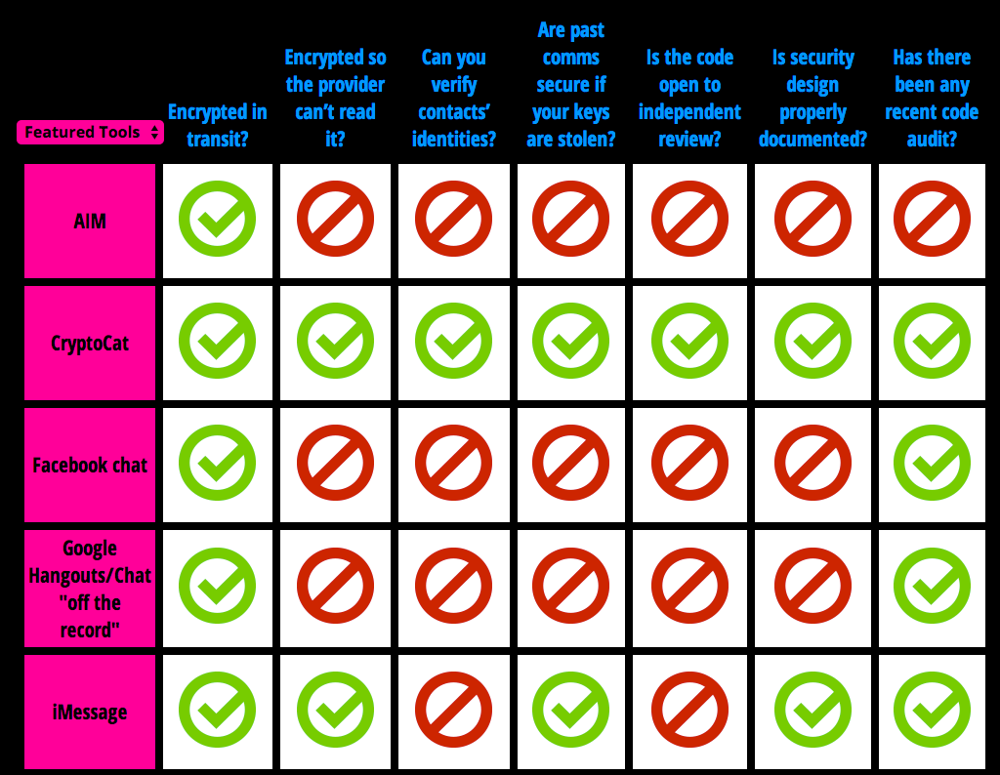
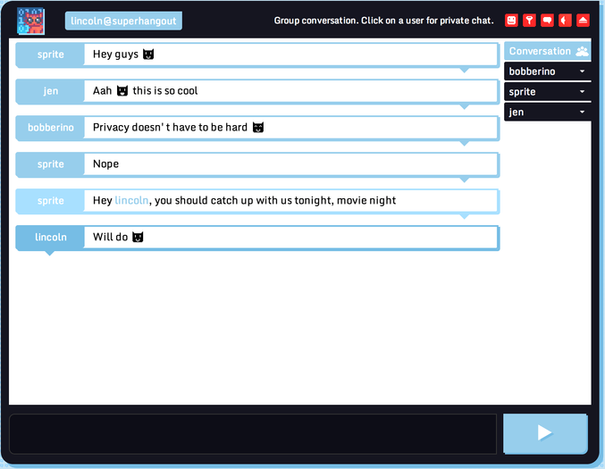
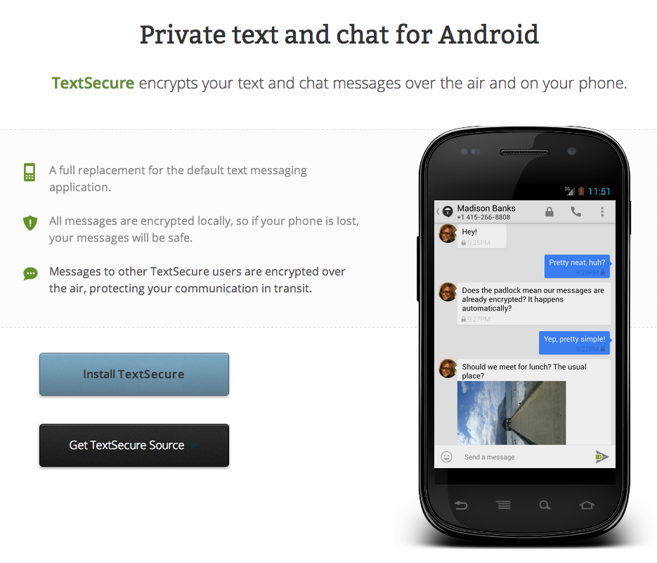
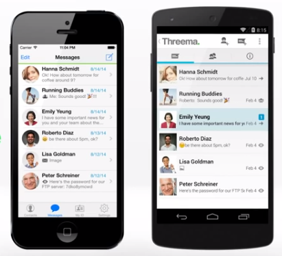
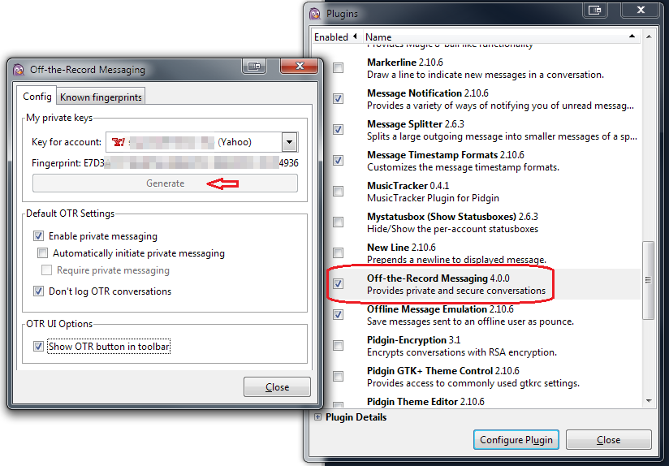
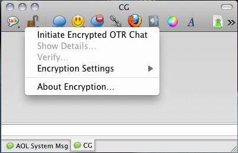
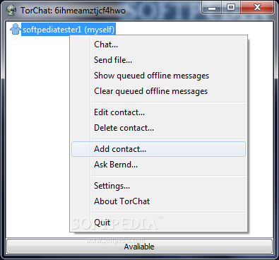

Messaging
EFF - Secure Messaging Scorecard
We recommend checking the so called "Secure Messaging Scorecard" provided by the EFF in order to get a full overview of available messenger software.

Above: Android App TextSecure (source: eff.org)
CryptoCat
Cryptocat is a fun, accessible app for having encrypted chat with your friends, right in your browser and mobile phone. Everything is encrypted before it leaves your computer. Even the Cryptocat network itself can't read your messages.
Cryptocat is open source, free software, developed by encryption professionals to make privacy accessible to everyone.
- Chat with groups of friends at the same time using Cryptocat's group chat encryption. Cryptocat's fun interface makes it easy!
- Send files and photos to friends quickly and easily, with the assurance that not even the Cryptocat network itself can read your data.
- Connect to Facebook Messenger to see which Facebook friends are also using Cryptocat, and set up encrypted chat with them instantly.

Screenshots

Above: Chat window
Download
Available for Chrome, Firefox, Safari, Opera, OS X (App), iPhone (App)
Price: Free
For more information and the download visit the website
TextSecure (Android)
TextSecure encrypts your text and chat messages over the air and on your phone.
- A full replacement for the default text messaging application.
- All messages are encrypted locally, so if your phone is lost, your messages will be safe.
- Messages to other TextSecure users are encrypted over the air, protecting your communication in transit.
Screenshots

Above: Android App TextSecure
Download
Available in the Google Play Store
Price: Free
More Information
For more information visit website
Threema (Android/iOS/WindowsPhone)
Threema is a mobile messaging app that puts security first. With true end-to-end encryption, you can rest assured that only you and the intended recipient can read your messages. Unlike other popular messaging apps (including those claiming to use encryption), even we as the server operator have absolutely no way to read your messages.
Screenshots

Above: Android and iPhone App
Download
Available in the iTunes Store
Available in the Google Play Store
Available in the Windows Phone Store
Price: Free
More Information
For more information visit website
OTR Messaging with Pidgin (Linux/Windows) and Adium (Mac OS X)
Off-the-Record (OTR) Messaging allows you to have private conversations over instant messaging by providing:
- Encryption - No one else can read your instant messages.
- Authentication - You are assured the correspondent is who you think it is.
- Deniability - The messages you send do not have digital signatures that are checkable by a third party. Anyone can forge messages after a conversation to make them look like they came from you. However, during a conversation, your correspondent is assured the messages he sees are authentic and unmodified.
- Perfect forward secrecy - If you lose control of your private keys, no previous conversation is compromised.
We recommend using Pidgin with the OTR Plugin on Windows and Linux and Adium with the integrated OTR feature.
For tutorials on how to setup the messengers with OTR check the links in the More Information and Tutorials section.
Pidgin with OTR Plugin

Above: Pidgin with OTR Plugin (source: zedt.eu)
Adium OTR Feature

Above: Adium OTR Feature
Download
- The Pidgin Messenger can be downloaded via this link
- The OTR Plugin for Pidgin 2.x can be downloaded via this link
- The Adium Messenger can be downloaded via this link (OTR Feature is integrated)
More Information and Tutorials
- For a tutorial on how to setup Pidgin with OTR visit this website
- For a tutorial on how to setup Adium with OTR visit this website
- For more information on OTR visit this website
TorChat
TorChat is a peer to peer instant messenger with a completely decentralized design, built on top of Tor's location hidden services, giving you extremely strong anonymity while being very easy to use without the need to install or configure anything.
TorChat just runs from an USB drive on any Windows PC. (It can run on Linux and Mac too, in fact it was developed on Linux with cross platform usability in mind from the very first moment on, but the installation on other platforms than Windows is a bit more complicated at the moment)
Screenshot

Above: Contact Window
Download
Price: Free
Download TorChat here
More Information
Find more information here